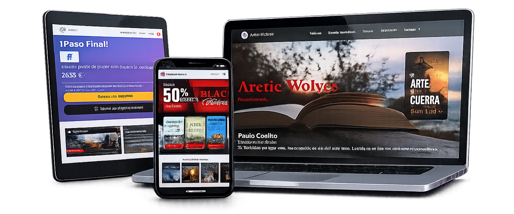
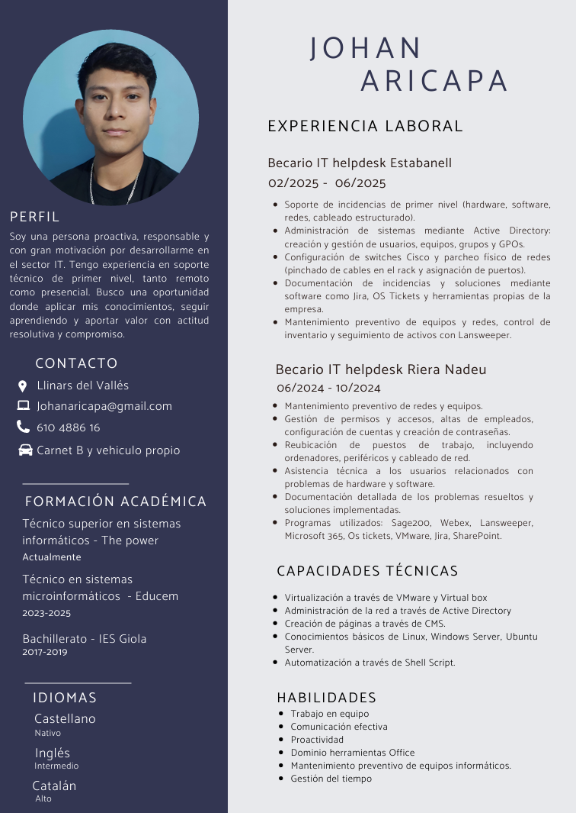

Hola, Soy Johan Aricapa
Administrador de sistemas
Soy una persona proactiva, responsable y con gran motivación por desarrollarme en el sector IT. Tengo experiencia en soporte técnico de primer nivel (Helpdesk N1), resolviendo incidencias, configurando sistemas y brindando atención al usuario tanto de forma remota como presencial.
Busco una oportunidad donde aplicar mis conocimientos, seguir aprendiendo y aportar valor con compromiso, adaptación y actitud resolutiva.
Mi experiencia
Experiencia Laboral
Soporte Técnico N1
Empresa: Grupo Estabanell
Duración: Enero 2025 - Julio 2025
Soporte técnico de primer nivel en hardware, software y redes, administración de usuarios y políticas en Active Directory, configuración básica de switches Cisco y cableado estructurado, documentación de incidencias y mantenimiento preventivo con control de inventario.
Soporte Técnico N1
Empresa: Riera Nadeu
Duración: Enero 2024 - Julio 2024
Encargado de asegurar la operatividad de los sistemas mediante el soporte a usuarios, la administración de Active Directory y la configuración física de redes. Mi rol abarcó desde el diagnóstico de fallos hasta la documentación técnica en Jira.
Creación página web shopify
Empresa: Kotowaza Tougue Club
Duración: Enero 2023 - Diciembre 2023
Cree una página e-commerce para una marca de tuning. Maqueté el frontend utilizando Tilda Zero Block, lo que permitió un control total sobre el diseño responsivo y la estética visual, realicé la configuración técnica de los registros DNS y la administración del dominio a través de la infraestructura de IONOS.
Creación página web HTML-CSS-JAVASCRIPT
Empresa: Educem
Duración: Enero 2022 - Diciembre 2022
Diseñé y programé el sitio web de una tienda de eBooks combinando HTML, CSS y JavaScript. El proyecto se centró en ofrecer una experiencia de lectura y compra fluida, implementando una interfaz visual atractiva y funcionalidades dinámicas.
Proyectos Destacados
Artic Wolves Página oficial de libros digitales

Transparencia y Tecnología
Para garantizar la seguridad de los manuscritos y la disponibilidad de nuestros servicios, Artic Wolves cuenta con una infraestructura de red de nivel corporativo diseñada, auditada y documentada a medida.
Fuente Única de Verdad: Documentación y Simulación
La piedra angular de nuestra infraestructura es la planificación. Toda la arquitectura de red fue simulada y validada en Cisco Packet Tracer. Para la gestión en producción, utilizamos NetBox (DCIM/IPAM). Esto nos permite mantener un inventario exacto de cada puerto, servidor, rack e IP, minimizando errores y acelerando la resolución de incidencias.
Networking, Subnetting y Hardware
- Dimensionamiento de Hardware: Elección de componentes físicos y virtuales (CPU, RAM, discos) estrictamente calculada según la carga de trabajo (Workload) esperada, evitando sobrecostes y asegurando un rendimiento óptimo del motor de base de datos y servidor web.
- Subnetting y Enrutamiento: Diseño de red basado en VLSM (Variable Length Subnet Mask) para un aprovechamiento máximo de las direcciones IP. Enrutamiento con NAT y Listas de Control de Acceso (ACLs) para filtrar tráfico no deseado en el perímetro.
- Topología Jerárquica: Conmutación dividida en capas con Switches de Distribución y Switches de Acceso. Implementación de tecnología PoE (Power over Ethernet) para alimentar dispositivos finales.
- VLANs y QoS: Segmentación estricta del tráfico en redes virtuales independientes (Datos, Servidores, Gestión) y priorización de paquetes mediante Calidad de Servicio (QoS).
Arquitectura de Servidores, Seguridad y Hardening
- Hardening y Auditoría Continua: Bastionado (Hardening) de los sistemas operativos cerrando servicios innecesarios. Ejecución programada de scripts de seguridad en Bash que analizan los logs (auth.log) para detectar fuerza bruta, controlan los puertos a la escucha e identifican sesiones activas no autorizadas.
- Monitorización Constante 24/7: Implementación del stack Prometheus + Grafana mediante agentes (node_exporter) para obtener telemetría y alertas en tiempo real sobre el uso de recursos y salud de la red.
- Directorio Activo (AD): Gestión de identidades centralizada, control de acceso y políticas de seguridad (GPOs) para los empleados desde el Windows Server principal. Conexiones remotas cifradas vía SSH.
- Resiliencia de Datos (SMB y GFS): Integración de entornos mixtos mediante protocolo SMB/CIFS. Estrategia de backups 3-2-1 con rotación GFS (Abuelo-Padre-Hijo) mediante scripts automatizados (volcados SQL en caliente y respaldos Bare Metal de Windows Server).
| Nombre del Nodo | Sistema Operativo | Rol Principal en la Red |
|---|---|---|
| SRV-WEB | Ubuntu Server Linux | Servidor frontend web, ejecutor de automatizaciones Cron, scripts de auditoría y cliente SMB para backups. |
| SRV-BBDD | Debian Linux | Motor MariaDB para gestión de ventas y autores. Hardening aplicado y volcado automatizado (mysqldump). |
| SRV-CORE | Windows Server | Controlador de dominio (Active Directory),DHCP, FTP, DNS local y repositorio de almacenamiento seguro para Backups. |
Mi Curriculum Vitae
Te invito a descargar mi Currículum Vitae para conocer más sobre mi formación, habilidades técnicas y experiencia en el área de redes, servidores y tecnología. En él encontrarás información detallada sobre mis proyectos, conocimientos y capacidades, así como mi disposición para seguir aprendiendo y aportar valor en entornos profesionales.
Descargar
Contactame
Si deseas obtener más información, tienes alguna consulta o estás interesado en colaborar conmigo, no dudes en contactarme. Estaré atento para responderte y conversar sobre oportunidades académicas o profesionales.